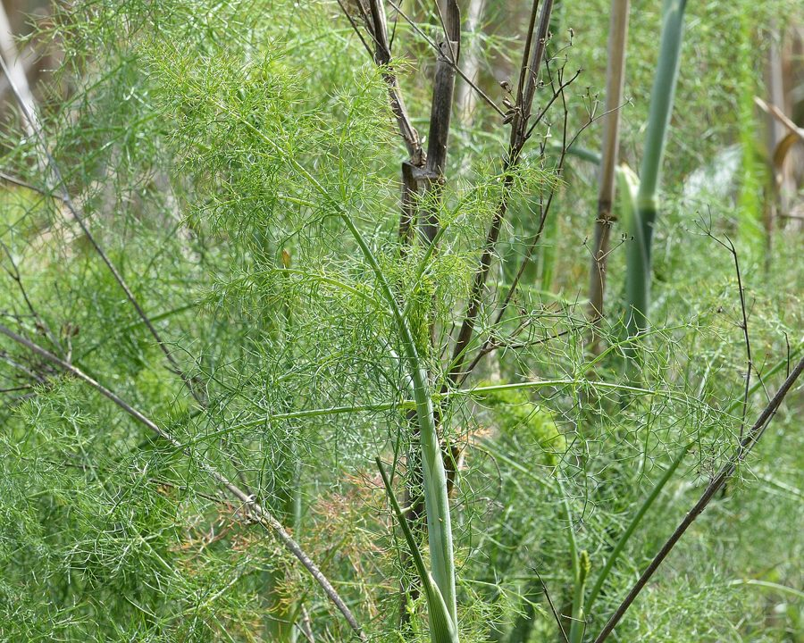

सौंफFennel
Foeniculum vulgare · Apiaceae · FLR-0394

- Scientific name वैज्ञानिक नाम
- Foeniculum vulgare Mill.
- Family कुल
- Apiaceae
- Hindi हिंदी
- सौंफ
- Local names स्थानीय नाम
- saunf, sonf, fennel
- Status here यहाँ की स्थिति
- cultivated
- Movement आवागमन
- Resident, here all year
- Known from कहाँ दर्ज
- Others have published records from the wider Awadh–Purvanchal plain, none yet from Basti–Ayodhya अवध–पूर्वांचल से दूसरों के प्रकाशित अभिलेख, बस्ती–अयोध्या से अभी नहीं
- IUCN IUCN
- not evaluated
- Review समीक्षा
- not yet reviewed
When to look कब देखें
Present all year. साल भर मौजूद।
Uses and possibilities उपयोग और संभावनाएँ
“Traditional medicine” means a documented traditional use, not a claim that it works. Nothing on this page is medical advice.
Drawn from the documented uses in the profile below, where each is labelled traditional, current or a research lead. All uses →
Tell it apart from इनसे अलग पहचानें
सौंफ / Fennel
Foeniculum vulgare Mill. — Apiaceae
सौंफ — अवध और पूर्वांचल के खेतों और बगीचों में उगाई जाने वाली एक अत्यंत सुगंधित मसाले की फसल है। इसके बारीक धागे जैसे पंखनुमा पत्ते और पीले फूलों की बड़ी छतरियां भोजन के बाद मुंह की ताजगी और पाचन के लिए प्रसिद्ध बीजों का स्रोत हैं।
Quick Identification त्वरित पहचान
| Feature | Description |
|---|---|
| Habit | Tall, erect, glabrous, aromatic annual or biennial herb with glaucous green stems |
| Foliage | Tripinnately to quadripinnately dissected leaves with filiform, thread-like segments |
| Stem | Striate, hollow, branched, emitting a sweet anise or licorice aroma when crushed |
| Inflorescence | Large, terminal, flat-topped compound umbels lacking involucral and involucellar bracts |
| Flowers | Minute, bright golden-yellow petals with inflexed tips; stamens five, exerted |
| Fruit | Oblong-ellipsoid schizocarp (cremocarp) with prominent, blunt longitudinal ribs |
Field tip: In garden beds and field edges, fennel is recognizable by its tall stature, delicate feathery foliage divided into hair-like thread segments, and strong sweet anise aroma. In late winter, its large flat umbels of tiny bright yellow flowers contrast with the white-flowered umbellifers like coriander and carrot.
हिंदी:
इसके पत्ते बारीक धागे की तरह कटे होते हैं और छूने पर सौंफ की मीठी खुशबू देते हैं।
बसंत में पौधे पर चटक पीले रंग के छोटे फूलों की बड़ी छतरियां खिलती हैं।
इसके बीजों पर धारियां बनी होती हैं और उन्हें चबाने पर मीठा, शीतल स्वाद आता है।
Morphology आकारिकी
Measurement not available in consulted sources. Fennel is a robust, erect, aromatic, biennial or annual herb cultivated for its flavorful fruits and fragrant foliage. The root system consists of a sturdy, tapering taproot that penetrates deeply into alluvial subsoils. The stems are stout, cylindrical, finely striate, hollow between nodes, glaucous green, and freely branched from the lower and middle nodes.
The leaves are alternate, tripinnate to quadripinnate, decompound into numerous capillary, filiform, thread-like ultimate segments that give the foliage an ethereal, misty appearance. The petioles are broad and clasping, expanding at the base into conspicuous, sheathing, membranous-margined structures that clasp the stem nodes tightly. Crushing any part of the leaf blade releases an intense, sweet, anise-like volatile bouquet.
The inflorescence is an expansive, terminal, flat-topped or slightly convex compound umbel situated on a long, erect peduncle. Bracts at the base of the primary umbel (involucre) and bracteoles at the base of the secondary umbellules (involucel) are typically absent, giving the inflorescence an open, naked appearance. The primary rays are numerous, slender, spreading or ascending, and become somewhat rigid in fruit.
Individual flowers are small, regular, bisexual, and pedicellate. The calyx teeth are obsolete or reduced to a microscopic rim. The five petals are obovate with an emarginate apex and a strongly inflexed, acute lobule, colored bright golden-yellow or sulfur-yellow. The stamens are five, alternating with the petals, bearing yellow anthers that dehisce longitudinally. The stylopodium is conical, fleshy, and nectariferous, crowned by two short, recurved styles. The fruit is an oblong-ellipsoid or cylindrical cremocarp, glabrous, greenish-brown when ripe, splitting into two mericarps. Each mericarp features five prominent, obtuse, prominent longitudinal ribs containing prominent oil vittae in the furrows.
हिंदी: इसके पौधे लंबे और तने चिकने होते हैं। पत्ते बारीक धागों जैसे कटे होते हैं और बसंत में सुनहरे पीले फूलों की बड़ी छतरियां खिलती हैं।
Behaviour & Ecology व्यवहार एवं पारिस्थितिकी
Foeniculum vulgare is adapted to Mediterranean and warm subtropical climates, requiring sunny weather, cool nights, and moderate soil moisture during vegetative growth, followed by warm, dry weather for seed ripening. The species possesses a high degree of floral protandry; within each floret, the anthers dehisce and shed pollen days before the styles elongate and the stigmatic surfaces become receptive, ensuring cross-pollination.
The bright yellow, open umbels produce copious, easily accessible nectar from the swollen stylopodium, making fennel one of the premier insect magnets in the spring agroecosystem of the Gangetic plain. A vast array of beneficial insects visits the umbels daily, including hoverflies, honeybees, solitary wasps, tachinid flies, and ladybird beetles.
The essential oil localized in the vittae of the fruits and secretory ducts provides chemical defense against generalist herbivores.
हिंदी: इसके पीले फूल प्रचुर मात्रा में मीठा मकरंद देते हैं जो मधुमक्खियों और मित्र कीटों को बहुत आकर्षित करते हैं।
Cultivation Calendar खेती का कैलेंडर
According to Duthie & Fuller (1893, Part III, p. 43), fennel (sonf) is extensively cultivated in these provinces during the cold season in garden patches. For Bengal, Roxburgh (quoted by Duthie & Fuller) gives seed time about October and harvest in March, when the plants perish.
हिंदी: दुथी और फुलर (1893) के अनुसार सौंफ शीतकाल में बगीचों की क्यारियों में उगाई जाती है। इसकी बुवाई अक्टूबर के आसपास होती है और मार्च में पौधे सूखने पर कटाई की जाती है।
Life Cycle / Phenology जीवन चक्र एवं ऋतुचक्र
Fennel seeds exhibit slow, staggered germination, typically emerging within a fortnight after sowing. The young seedlings establish a fine taproot before expanding their first thread-like true leaves. Vegetative branching proceeds through November, December, and January, forming a dense, bushy green canopy.
With the onset of longer day lengths and warmer temperatures in February, the apical buds transition to reproductive development. The main stem and lateral branches elongate rapidly, producing primary umbels, followed by secondary and tertiary umbels from upper axils. Flowering progresses from the periphery of the umbel toward the center, peaking between mid-February and late March.
Pollinated flowers set fruit rapidly, the ovaries expanding into ribbed mericarps. The fruits mature from green to pale yellowish-brown over a few weeks. Upon reaching maturity in April and May, the cremocarp dries, and the two mericarps separate easily along the central carpophore, ready for harvest.
हिंदी: बीज जमने में कुछ दिन लेते हैं। सर्दियों में झाड़ीदार पौधा बनता है और बसंत में फूल खिलकर धारीदार बीज बनते हैं।
Associated Species / Interactions सहजीवी प्रजातियाँ एवं पारिस्थितिक संबंध
Flowering fennel umbels attract hoverflies, whose predatory larvae suppress aphid populations in adjacent agricultural plots. Native honeybees and wild bees actively forage on the nectar-rich flowers throughout sunny mornings.
हिंदी: सिरफिड मक्खियां और परजीवी ततैया इसके फूलों पर आते हैं और फसलों के हानिकारक कीटों का नाश करते हैं।
Pests and Diseases कीट और रोग
A major insect pest of fennel in northern India is aphids, which attack the succulent shoots, leaves, and developing umbels during cloudy, humid weather in February. Dense infestations cause leaves to curl and developing seeds to shrivel, while secreted honeydew leads to black sooty mold growth. Seed midges and thrips also attack developing florets.
The most severe fungal disease affecting fennel is powdery mildew, which appears as a white, powdery coating covering leaves, stems, and umbels in dry, warm spring conditions. Blight causes angular brown necrotic lesions on foliage and floral stalks. In waterlogged soils, root rot causes yellowing and sudden wilting of the plants. Cultural management includes wide spacing to promote air circulation, early sowing, destruction of infected plant debris, and balanced organic manuring.
हिंदी: पाउडरी मिल्ड्यू (सफेद फफूंद) और माहू इसके प्रमुख रोग-कीट हैं। संतुलित सिंचाई और धूप से फसल स्वस्थ रहती है।
Agricultural / Human Relevance कृषि एवं मानव प्रासंगिकता
Fennel is an indispensable spice, mouth freshener, and condiment across Indian domestic culture. After meals, sugar-coated or roasted fennel seeds (mukhwas) are chewed to freshen the breath. The dried aromatic mericarps are an essential component of the traditional panch phoron spice blend, extensively used in regional cuisine to season dals, vegetable curries, and pickles. Chopra et al. (1956, p. 121) record that the seeds are stimulant, aromatic, stomachic, and carminative, the root purgative, and the leaves diuretic. Duthie & Fuller (1893, Part III, p. 43) also document that the leaves are eaten as a pot herb, the root used as a purgative, and the fruits as carminative. This is a record of published traditional use, not medical advice.
हिंदी: सौंफ मुखवास, मसालों और पारंपरिक उपयोग के लिए अत्यंत लोकप्रिय है। इसके बीज और पत्ते दोनों काम आते हैं।
Expected Locally स्थानीय रूप से अपेक्षित
Not a field record. Written from published accounts for eastern Uttar Pradesh. No confirmed local sighting yet — if you have seen it, that is what the atlas needs.
अभी तक स्थानीय पुष्टि नहीं। यह विवरण प्रकाशित स्रोतों से है, किसी अवलोकन से नहीं।
Look in irrigated garden plots, agricultural field borders, and spice holdings across eastern Uttar Pradesh. It should be looked for during the cold rabi months and early spring along agricultural bunds and home vegetable gardens.
GBIF holds published records from the wider Awadh–Purvanchal plain, none yet from Basti–Ayodhya.
A first record would be a photograph of the flowering or fruiting plant with place and date, sent through the About page.
Distribution वितरण
Foeniculum vulgare is cultivated globally across temperate, Mediterranean, and subtropical regions. The species is indigenous to the coastal and inland zones of the Mediterranean basin and southern Europe, from where it was introduced through trade routes across Asia and the Americas. It has been cultivated in the Indian subcontinent since ancient times, naturalizing occasionally along roadsides and irrigation channels. Duthie & Fuller (1893, Part III, p. 43) describe sonf as extensively cultivated in these Provinces during the cold season.
हिंदी: यह मूल रूप से भूमध्यसागरीय क्षेत्र का पौधा है, जो भारत और उत्तर प्रदेश के मैदानों में बड़े पैमाने पर उगाया जाता है।
Research Questions शोध प्रश्न
- What is the diversity and seasonal turnover of syrphid and solitary bee visitors foraging on fennel umbels in the Awadh agroecosystem? / अवध के कृषि पारिस्थितिकी तंत्र में सौंफ की छतरियों पर आने वाली मधुमक्खियों और मक्खियों की कौन सी प्रजातियां प्रमुख हैं?
- How do traditional sowing dates in eastern UP influence the incidence of powdery mildew and seed aphid outbreaks? / पूर्वी उत्तर प्रदेश में बुवाई के समय का चूर्णिल आसिता (पाउडरी मिल्ड्यू) और माहू के प्रकोप पर क्या असर पड़ता है?
- Can fennel border plantings serve as effective biological control buffers to enhance parasitism of armyworms in adjacent wheat and vegetable fields? / क्या खेतों की मेड़ों पर सौंफ लगाने से हानिकारक कीटों के प्राकृतिक परजीवी कीटों को बढ़ावा मिलता है?
- What are the comparative essential oil yields of local desi fennel landraces compared to commercial improved cultivars?
- How does irrigation termination timing affect seed greenness, test weight, and volatile aroma retention?
हिंदी: मित्र कीटों को आकर्षित करने और सुगंधित तेल की गुणवत्ता पर स्थानीय परिस्थितियों में शोध जरूरी है।
Similar Species मिलती-जुलती प्रजातियाँ
Fennel (Foeniculum vulgare) shares the feathery, dissect leaf architecture of other cultivated Apiaceae species. Dill (Anethum graveolens), known locally as sowa, also produces yellow flowers and feathery foliage, but it is an annual with shorter stature, bluer-green foliage, a flatter umbel, distinctly winged flattened mericarps, and a sharper, more pungent, non-anise aroma. Carrot (carrot, Daucus carota, FLR-0391) has feathery leaves, but its ultimate leaf segments are broader and lanceolate rather than thread-like, its flowers are glistening white with a central purple floret, its fruiting umbel forms a concave bird-nest, and it develops a fleshy edible storage taproot. Coriander (coriander, Coriandrum sativum, FLR-0099) bears white to pinkish flowers, broad fan-lobed basal leaves, and globose, non-ribbed cremocarps.
| Feature / Trait | Fennel (Foeniculum vulgare) | Dill (Anethum graveolens) | Carrot ([[carrot | carrot]], Daucus carota, FLR-0391) |
|---|---|---|---|---|
| Flower Colour | Bright golden-yellow | Pale to bright yellow | White (central floret often dark red) | |
| Fruit Shape | Oblong-cylindrical, prominent ribs | Oval-elliptical, distinctly winged | Oblong, bristly hooked spines | |
| Foliage Aroma | Sweet anise or licorice aroma | Sharp, pungent dill / sowa aroma | Fresh herbaceous carrot aroma | |
| Leaf Segments | Very long, filiform, thread-like | Short, filiform, bluish-green | Narrow-lanceolate, pinnatifid | |
| Root Habit | Sturdy taproot; non-fleshy | Slender annual taproot | Fleshy swollen edible taproot |
Field rule: Fennel (Foeniculum vulgare) is distinguished by its tall glaucous stems, filiform thread-like leaf segments, bright yellow umbels, and sweet anise scent, whereas coriander has white-pink flowers and broad basal leaves.
हिंदी: सोवा के फूल भी पीले होते हैं पर उसके बीज चपटे और पंखदार होते हैं, जबकि सौंफ के बीज मोटे और बेलनाकार होते हैं।
Taxonomy & Classification वर्गीकरण एवं नामकरण
Foeniculum vulgare was published by Philip Miller in 1768 in the eighth edition of The Gardeners Dictionary. The genus Foeniculum belongs to the tribe Apieae within the carrot family (Apiaceae). Cultivated fennel is generally divided into two main horticultural varieties: var. vulgare (sweet or common fennel, grown for its aromatic seeds) and var. azoricum (Florence fennel, grown for its swollen, succulent bulb-like leaf bases). In J. F. Duthie's Flora of the Upper Gangetic Plain, the species is treated under Umbelliferae as an extensively cultivated plant grown for its valuable medicinal and aromatic fruits.
Original description. Foeniculum vulgare was published by Philip Miller in 1768 in The Gardeners Dictionary (ed. 8, no. 1).
Subspecies. Cultivated fennel includes common or sweet fennel (var. vulgare), grown for aromatic seed, and Florence fennel (var. azoricum), grown for swollen edible leaf bases.
Family and order placement. The genus Foeniculum belongs to the tribe Apieae within the carrot family (Apiaceae), order Apiales.
IUCN status rationale. Foeniculum vulgare is widely cultivated globally and has naturalized across many regions; it is categorized as Not Evaluated (NE) on the IUCN Red List.
हिंदी: फिलिप मिलर ने 1768 में इसका नामकरण किया था। यह एपिएसी (सौंफ-गाजर कुल) का सदस्य है।
Photo Gallery फोटो गैलरी
No photos yet. Images documenting this species from eastern Uttar Pradesh will be added following verification.
References संदर्भ
- Miller, P. (1768). The Gardeners Dictionary, ed. 8, no. 1. John and Francis Rivington, London.
- Duthie, J. F. & Fuller, J. B. (1893). Field and Garden Crops of the North-Western Provinces and Oudh. Part 3. Roorkee: Thomason Civil Engineering College Press, p. 43.
- Chopra, R. N., Nayar, S. L. & Chopra, I. C. (1956). Glossary of Indian Medicinal Plants. New Delhi: Council of Scientific & Industrial Research, p. 121.
- Clarke, C. B. (1879). Umbelliferae. In J. D. Hooker (ed.), The Flora of British India, vol. 2, p. 695. L. Reeve & Co., London.
- Duthie, J. F. (1903). Flora of the Upper Gangetic Plain and of the Adjacent Siwalik and Sub-Himalayan Tracts, vol. 1, p. 396. Office of the Superintendent of Government Printing, Calcutta.
- GBIF Occurrence Data — Foeniculum vulgare, India (2025).
Source file: species/flora/crops/fennel.md